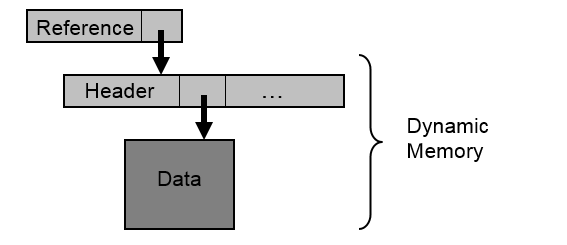

SAP NetWeaver AS ABAP Release 751, ©Copyright 2017 SAP AG. All rights reserved.
ABAP - Keyword Documentation → ABAP - Reference → Declarations → Declaration Statements → Data Types and Data Objects → Types and Objects - Overview → Data Objects → Memory Management of Deep Objects →Memory Requirements for Deep Data Objects
The memory requirement for a deep data object consists of constant memory requirements for the reference and dynamic memory requirements for the header and the actual objects.

Dynamic memory (header and data) is requested in the following cases:
When a deep data object is initialized using CLEAR, REFRESH (obsolete), or FREE, the actual data is deleted, but the reference variables and (for dynamic data objects) the header are preserved. The latter is reused when memory is requested again. The memory requirement of a dynamic data object that is used once and then deleted therefore consists of the reference and the memory requirement of the header, with the exception of boxed components. Only when using the statement FREE on internal tables are table headers sometimes deleted if they would take up too much memory. For static components, initializations do not currently cause memory to be released. Initializing a static box in which initial value sharing was canceled does not delete the instance in the internal session and assigns its type-friendly initial value to the instance instead.
The memory requirement of the different headers is approximately as follows:
For internal tables, there are additional row-related management costs in the header. This memory is not created in the table header, but is created in parallel to the table body. This means that when rows are deleted, the corresponding management data is also deleted.
The exact memory requirement of a deep data object can be determined in ABAP Debugger using the memory consumption function and by creating a memory snapshot for Memory Inspector.
Note
Deleting rows in internal tables using DELETE does not usually free any memory in the internal table. Statements such as CLEAR or FREE must be used to free memory in internal tables.
Executable Example
Deep Data Objects, Memory Consumption